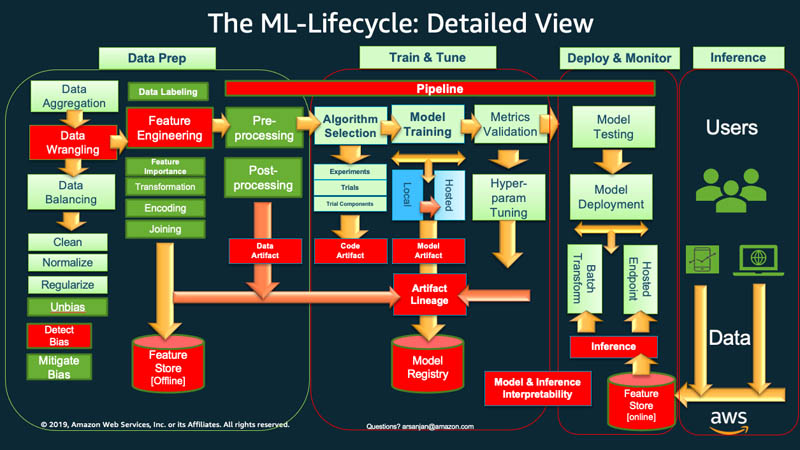
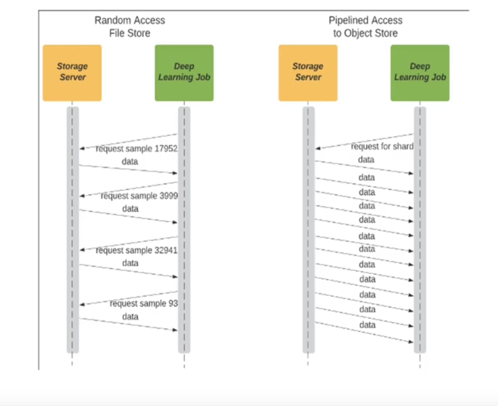

Dani - ML Team
📝
Load training dataset stored in an S3 bucket to an EC2 machine ready for training.

Requirements:
Dataset versioning (DVC, …)
Requirements:
train_21082019.txt| # samples | size (GB) | mean sample size (KB) | Usual training batch size (samples) | Usual training batch size (MB) |
|---|---|---|---|---|
| 1180347 | 38.5 | ~32.61 | 32 | 1.04 |
Characteristics:
Performance difference:

Split a huge dataset file in several sequential parts.
Main advantage: allow parallelization
Two main types
| Engine | Query Optimizer | Multimodal | Distributed | Arrow Backed | Vectorized Execution Engine | Out-of-core |
|---|---|---|---|---|---|---|
| Daft | Yes | Yes | Yes | Yes | Yes | Yes |
| Pandas | No | Python object | No | optional >= 2.0 | Some(Numpy) | No |
| Polars | Yes | Python object | No | Yes | Yes | Yes |
| Modin | Yes | Python object | Yes | No | Some(Pandas) | Yes |
| Ray Data | No | Yes | Yes | Yes | Some(PyArrow) | Yes |
| PySpark | Yes | No | Yes | Pandas UDF/IO | Pandas UDF | Yes |
| Dask DF | No | Python object | Yes | No | Some(Pandas) | Yes |
📖
Developed scripts to prepare
from typing import List, Optional
import logging
from pathlib import Path
import multiprocessing
# from s3fs import S3FileSystem
import polars as pl
from tqdm import tqdm
import orjson as json
from src.file_loader import FSFileLoader
from src.timer import Timer
# logging.basicConfig(level=logging.DEBUG)
def load_data_annotation(
data_annotation_file_path: Path,
file_loader: FSFileLoader = FSFileLoader(),
data_annotation_separator: str = " ",
) -> List[List[str]]:
items = []
paths = []
labels = []
try:
with file_loader.load(
data_annotation_file_path,
mode="r",
encoding="utf-8",
) as f:
for i, line in enumerate(tqdm(f)):
# TODO: Remove. Temporal exit for testing purposes
# if i > 5000:
# return [paths, labels]
path, label = f"{line}".split(data_annotation_separator, 1)
paths.append(path)
labels.append(label)
items = [paths, labels]
return items
except Exception as e:
logging.error(e)
raise e
def load_sample(
sample_path: str, file_loader: FSFileLoader = FSFileLoader()
) -> List[List[List[float]]]:
# logging.debug(f"Sample path to load: {self.s3_bucket_name}{sample_path}")
sample = []
try:
with file_loader.load(
Path(sample_path),
mode="r",
) as f:
sample_file = f.read()
if sample_file:
sample = json.loads(sample_file)
return sample
except Exception as e:
logging.error(f"Error loading {sample_path}")
logging.error(e)
raise e
@Timer(name="Dataset transformation to polars df as parquet file")
def strokes_data_annotation_to_df(
items: List[List[str]],
shard_i: int,
dataset_file_path: Path,
dataset_parquet_path: Path,
s3_bucket_name: str,
compression: pl._typing.ParquetCompression = "zstd",
compression_level: Optional[int] = None,
use_pyarrow: bool = False,
):
train_df = (
pl.DataFrame(items)
.rename(
{
"column_0": "sample_path",
"column_1": "label",
}
)
.with_columns(
pl.col("sample_path")
.str.replace("^./", f"{dataset_file_path.parent}/")
.map_elements(
load_sample,
# return_dtype=pl.List(pl.List(pl.List(pl.Float64))),
return_dtype=pl.List(pl.List(pl.Array(pl.Float64, 2))),
)
# .map_elements(load_sample, return_dtype=pl.List)
# .map_elements(load_sample, return_dtype=pl.List(pl.Float64))
.alias("sample"),
)
.with_columns(pl.col("label").str.split(by=" "))
.select(["sample", "label"])
)
print(f"sharded_train_df.head(): {train_df.head()}")
logging.debug(f"sharded_train_df.head(): {train_df.head()}")
logging.debug(f"sharded_train_df.tail(): {train_df.tail()}")
logging.debug(train_df.collect_schema().names())
# NOTE: Data preparation steps could be done here
logging.info(f"data/{dataset_parquet_path}")
train_df.write_parquet(
Path(
f"data/{dataset_parquet_path.stem}.{shard_i:04d}{dataset_parquet_path.suffix}"
),
use_pyarrow=use_pyarrow,
compression=compression,
compression_level=compression_level,
)
logging.info(f"Writing s3://{s3_bucket_name}/{dataset_parquet_path}")
train_df.write_parquet(
f"s3://{s3_bucket_name}/{dataset_parquet_path.parent}/{dataset_parquet_path.stem}.{shard_i:04d}{dataset_parquet_path.suffix}",
use_pyarrow=use_pyarrow,
compression=compression,
compression_level=compression_level,
storage_options={"aws_region": "eu-central-1"},
)
logging.info(f"s3://{s3_bucket_name}/{dataset_parquet_path} file written")
@Timer(name="Dataset transformation to polars df as a set of sharded parquet files")
def mproc_strokes_dataset_to_sharded_df(
dataset_file_path: Path,
dataset_parquet_path: Path,
s3_bucket_name: str,
num_of_shards: int = multiprocessing.cpu_count(),
compression: pl._typing.ParquetCompression = "zstd",
compression_level: Optional[int] = None,
use_polars_pyarrow: bool = False,
):
items = load_data_annotation(dataset_file_path, FSFileLoader())
num_of_items = len(items[0])
logging.debug(f"num_of_items: {num_of_items}")
slice_length = -(num_of_items // -num_of_shards) # NOTE: Ceil division
logging.debug(f"slice_length: {slice_length}")
for shard_i in range(num_of_shards):
offset = shard_i * slice_length
logging.debug(f"offset: {offset}")
logging.debug(f"offset + slice_length: {offset + slice_length}")
if offset + slice_length < num_of_items:
sharded_items = [
items[0][offset : offset + slice_length],
items[1][offset : offset + slice_length],
]
else:
sharded_items = [items[0][offset::], items[1][offset::]]
proc = multiprocessing.get_context("spawn").Process(
target=strokes_data_annotation_to_df,
args=(
sharded_items,
shard_i,
dataset_file_path,
dataset_parquet_path,
s3_bucket_name,
compression,
compression_level,
use_polars_pyarrow,
),
)
proc.start()
logging.info(f"Executed sub process to create shard_{shard_i:04d}")
if __name__ == "__main__":
mproc_strokes_dataset_to_sharded_df(
dataset_file_path=Path(
"data/strokes/wiris-math-online-incomplete/train_21082019.txt"
),
dataset_parquet_path=Path(
"df/strokes/wiris-math-online-incomplete/zstd-none-15-pyarrow/train_21082019.parquet"
),
s3_bucket_name="wiris-ml-datasets",
num_of_shards=15,
compression="zstd",
compression_level=None, # NOTE: 22 is maximal compression
use_polars_pyarrow=True,
)
Generated different type of datasets to test (see here):
Developed a benchmark framework
class fileLoader(ABC):
@abstractmethod
def load(
self, file_path: Path, *args, **kwargs
) -> IO | IOBase | ContextManager | pl.LazyFrame:
pass
@dataclass
class FSFileLoader(fileLoader):
def load(
self, file_path: Path, mode: str = "r", encoding: Optional[str] = None
) -> IO:
logging.info(f"Loading {file_path}...")
return file_path.open(
mode=mode,
encoding=encoding,
)
@dataclass
class S3ParquetLoader(fileLoader):
s3_bucket_name: str
def load(
self,
file_path: Path,
schema: Optional[Dict] = None,
aws_region: str = "eu-central-1",
) -> pl.LazyFrame:
logging.info(f"Loading {file_path}...")
return pl.scan_parquet(
f"s3://{self.s3_bucket_name}/{file_path}",
schema=schema,
storage_options={"aws_region": aws_region},
)
Load a custom Pytorch Dataset no matter where/how the samples are stored.
__iter__ functionalityfrom torch.utils.data import Dataset
import polars as pl
class UbiquitousDataset(Dataset):
@abstractmethod
def load_dataset(
self, file_path: Path, *args, **kwargs
) -> List[List[str]] | pl.LazyFrame:
pass
@abstractmethod
def length(self) -> int:
pass
@abstractmethod
def get_item(self, idx) -> tuple[str, str]:
pass
class S3ParquetDataset(UbiquitousDataset):
def __init__(
self,
s3_bucket_name: str,
dataset_file_path: Path,
_samples_dir_path: Optional[Path] = None,
) -> None:
self.s3_bucket_name = s3_bucket_name
self.file_loader: S3ParquetLoader = S3ParquetLoader(s3_bucket_name)
self.dataset_file_path = dataset_file_path
self._samples_dir_path = _samples_dir_path
self.items: pl.DataFrame = self.load_parquet_dataset().collect(
engine="streaming"
)
self.df_length: int = self.length()
@property
def samples_dir_path(self) -> Path:
if self._samples_dir_path is None:
return self.dataset_file_path.parent
return self._samples_dir_path
def __len__(self) -> int:
return self.df_length
def __getitem__(self, idx: int) -> tuple[str, str]:
return self.get_item()
def load_parquet_dataset(self) -> pl.LazyFrame:
try:
df = self.file_loader.load(
self.dataset_file_path,
schema={
"sample_path": pl.String,
"label": pl.String,
"sample": pl.List(pl.List(pl.List(pl.Float64))),
},
).select(pl.col("sample"), pl.col("label"))
return df
except Exception as e:
logging.error(e)
raise e
def load_dataset(self, *args, **kwargs) -> pl.LazyFrame:
return self.load_parquet_dataset()
def length(self) -> int:
return self.items.select(pl.len()).item()
def get_item(self) -> tuple[str, str]:
return str(self.items["sample"][idx].to_list()), self.items["label"][idx]
def train_mock(self) -> float:
t = Timer(name=f"{self.load_from}-{self.load_as}-train-mock")
sum_t = 0
for epoch in range(self.train_epochs):
t.start()
# for train_features, train_labels in tqdm(self.dataloader):
for train_features, train_labels in tqdm(self.dataloader):
pass
sum_t += t.stop()
mean_t = sum_t / self.train_epochs
return mean_t
| Size (Cloud storage) | Dataset creation time | Size (Local Disk) | Download time b4 training | Training (1 epoch) time |
|---|---|---|---|---|
| ~40 GB | 0s (already created) | ~40 GB | 15325.533 s | 61.3527 s |
…
| Size (Cloud storage) | Dataset creation time | Size (Local Disk) | Download time b4 training | Training (1 epoch) time |
|---|---|---|---|---|
| ~40 GB | 0s (already created) | 0 GB | 0 s | 22223.2921 s |
| Size (Cloud storage) | Dataset creation time | Size (Local Disk) | Download time b4 training | Training (1 epoch) time |
|---|---|---|---|---|
| ~40 GB* | ? | 0 GB | 0.0010 s ? | ? s |
*Tar compression may be improved
😢
Do not finish loading the dataset dataframe. Breaks before.
😢
scan_async)| Size (Cloud storage) | Dataset creation time | Size (Local Disk) | Download time b4 training | Training (1 epoch) time |
|---|---|---|---|---|
| 3 GB | 22.6430 s | 3 GB | 309.793 s | 277.5 s |
😏
scan_async)| Size (Cloud storage) | Dataset creation time | Size (Local Disk) | Download time b4 training | Training (1 epoch) time |
|---|---|---|---|---|
| 3 GB | 403.6961 s | 0 GB | 0 s | 249.4792 s |
| 368.1926 s (streaming) |
😏